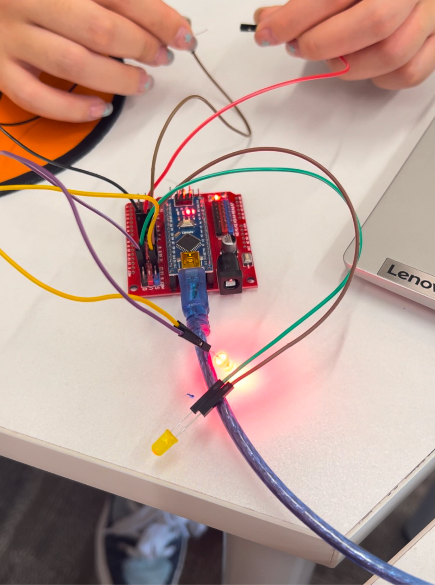
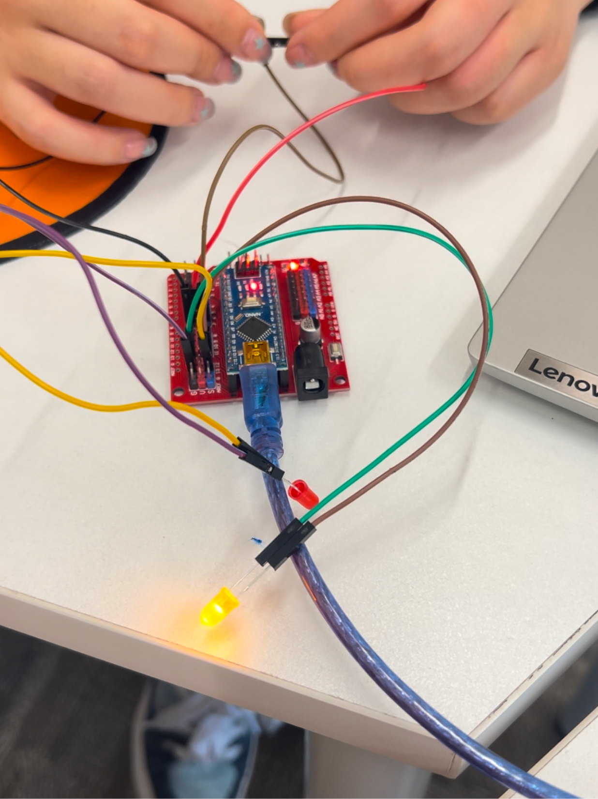
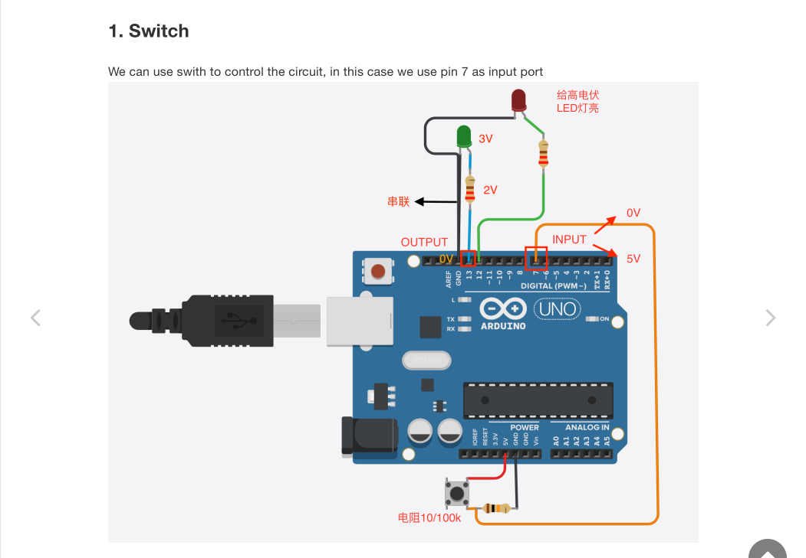
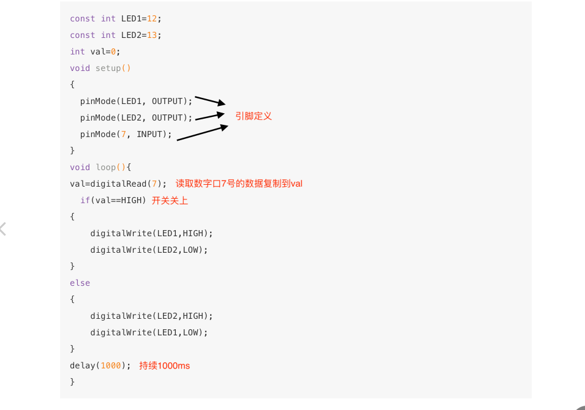
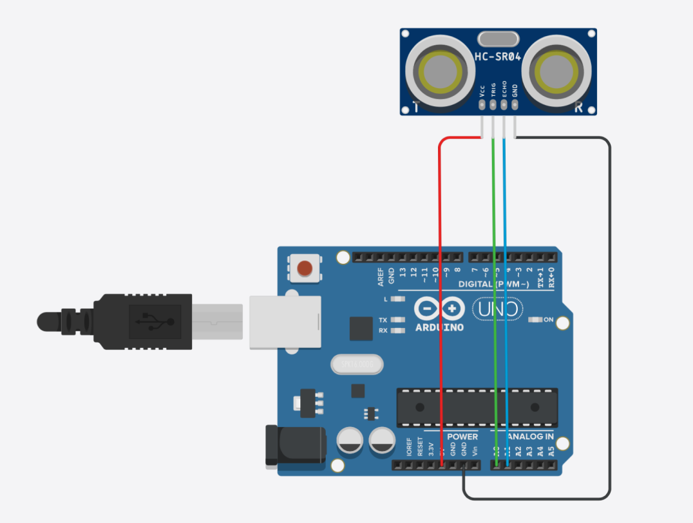
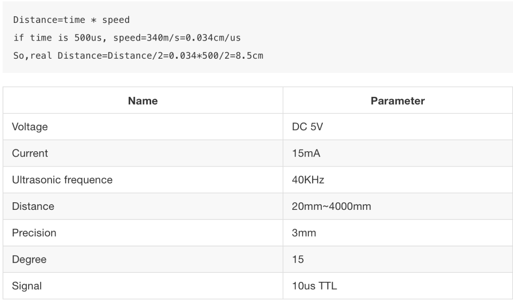
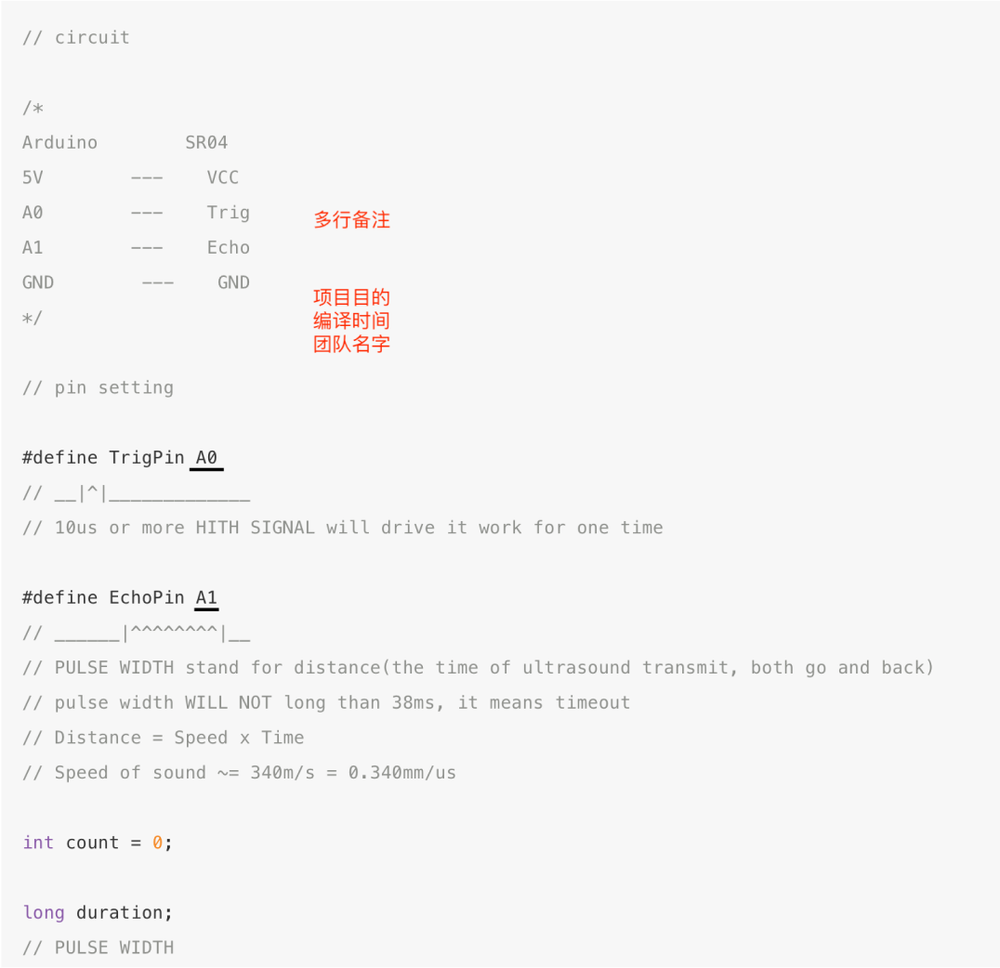
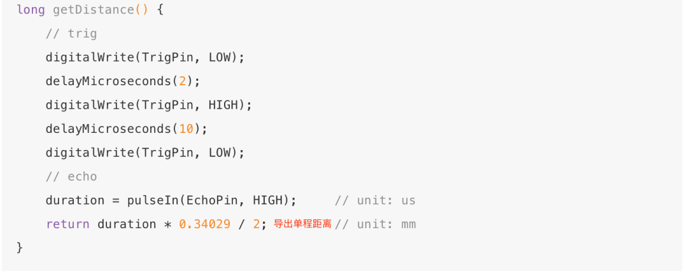
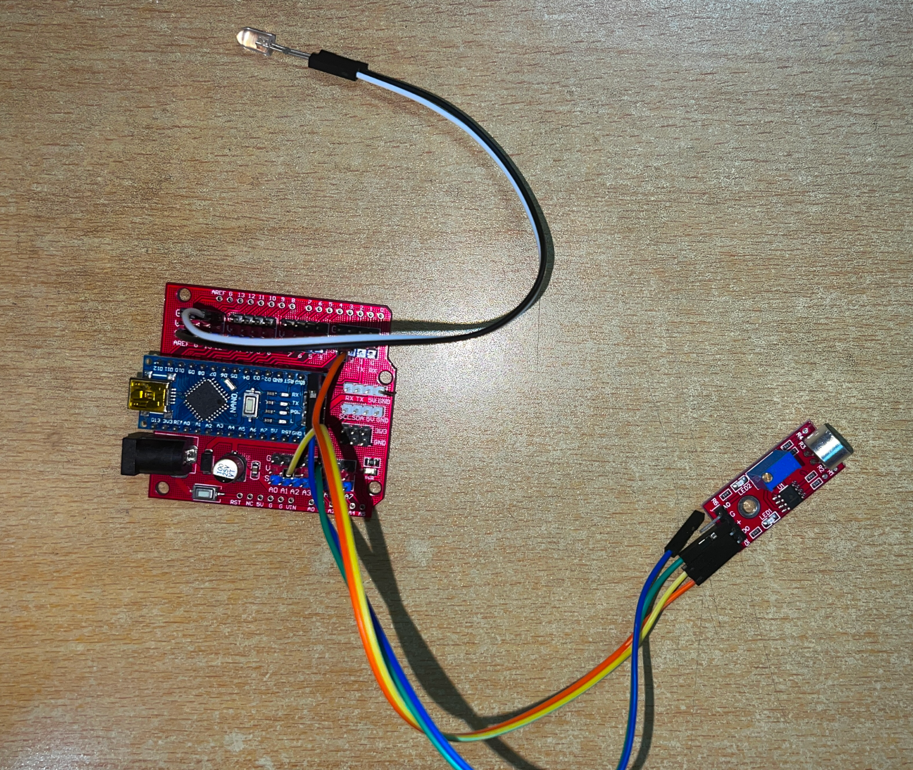
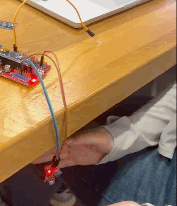

Arduino Input
Arduino Input
1-2.Ultrasonic sensor
 
Assessment
Member
Team
Home
Final Work
4AOL
     
1.Basic knowledge：
2.Sound sensor to control LED:
3.Interpretations of connection:
Introduction:
Code:
Clap to the Sound sensor,LED will turn on.Blow to the sound sensor,LED turn off.
const int soundDOPIN = 2;//声音从2角输入
const int redPin = 13;//LED的物理位置
unsigned long duration;//定义持续时间
void setup() {//初始化设置
Serial.begßin(115200);//发送数据的波特率
pinMode(soundDOPIN, INPUT);//定义引脚的模式
pinMode(redPin, OUTPUT);//定义LED的引脚为输出13
digitalWrite(redPin, LOW);//把LED熄灭为初始值
}
void loop() {
duration = pulseInLong(soundDOPIN, HIGH);//知道脉冲有多宽，转变为时间单位
if (duration>200)
{
Serial.println("wind");//输出字符wind
digitalWrite(redPin, LOW);//吹气LED熄灭
delay(500);
}
if (duration>0 & duration<200){//判断
Serial.println("hand");//输出hand
digitalWrite(redPin, HIGH);//拍手LED亮
delay(500);
}
else Serial.println(duration);//输出脉冲宽度数值
delay(1);//
}

5V
D0接信号角2
接G
黑色长接13角
白色短接G
Effect Display:
